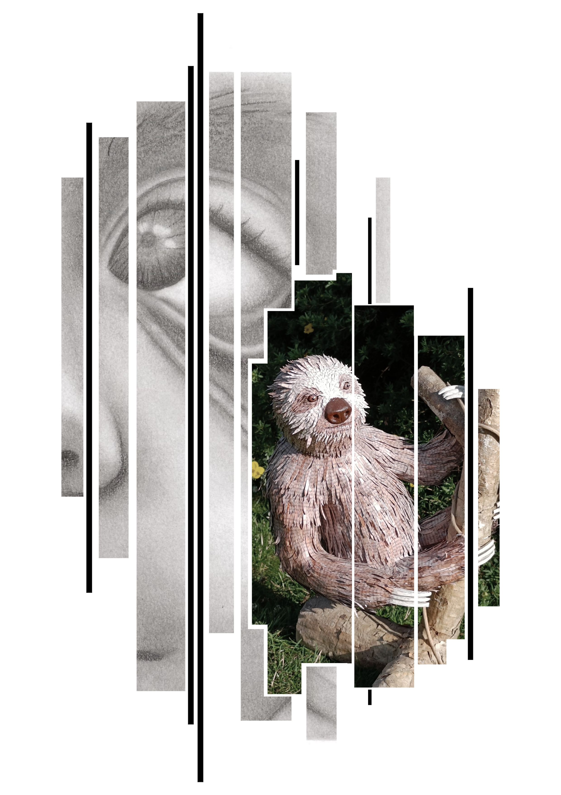

MSc in Digitalisation and Application Development • BA in Art and Technology
I move in the crossroads between strong technical development, system understanding, and aesthetic interactive design. Translating code and digital data into intuitive UX-design and robust applications.

A study of how conversational AI helps people make sense of everyday physical and mental well-being concerns.
Read Case StudyAn AI-supported service-booking system exploring conversational automation and streamlined user workflows.
Read Case StudyA user-centered Android application designed to help newcomers discover events and build meaningful social connections.
Read Case StudyA dynamic climate sculpture combining recycled materials, moving hardware, and sound to invite public reflection.
Read Case StudyA web application helping users compare nutrition, calories, and environmental impact when making dietary choices.
Read Case StudyAn analysis of how projection mapping, puppetry, sound, and physical acting shape the theatrical world of Luscinia.
Read Case StudyAn interactive video installation developed through autoethnographic methods to explore experiences of the Danish psychiatric system.
Read Case StudyA living wearable garment exploring mental health, nature, and human-nature relations through sensors and automated watering.
Read Case StudyA responsive tunnel installation designed to transform Gabels Torv from a transit zone into an interactive public space.
Read Case StudyAn interactive light sculpture using puzzle pieces and responsive lighting to explore mental health and mutual support.
Read Case StudyOutside my academic projects, I spend time building, drawing, and exploring how materials and disciplines can come together. This practice is rooted in patience, attention to detail, and a desire to create experiences that speak to other people.
Enter Art PortfolioSpecialization in solving complex challenges through cross-disciplinary collaboration, system development, data visualization, and user-centered design.
Focus on concept development, interaction design, Human-Computer Interaction (HCI), and the integration of hardware and software.